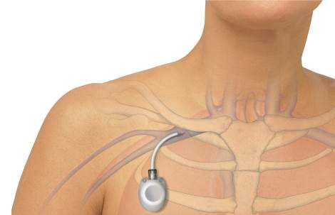
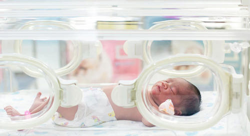

你好，欢迎来到《医学通识50讲》，我是薄世宁。
我们知道，决定一场战役胜败的，不仅在于有多少战斗力强的士兵，也不仅在于拥有多少威力强劲的炮弹。
能够把这些决定胜负的“能量”投放到战场上，至关重要。
在医学上，药、液体、营养、电解质、白蛋白、氨基酸、葡萄糖，甚至血液等等，都是治病的能量。
给药途径，本质上就是一种“能量投放系统”。
如果这个系统失效，结局是什么呢？
输液源于霍乱：开启生命的新通道
19世纪，英国霍乱爆发。这种病导致死亡的一种主要原因，就是能量投放系统失效。
我解释一下。
霍乱是一种由霍乱弧菌引起的烈性消化道传染病。
得了霍乱的病人会出现剧烈恶心、呕吐、腹泻。严重的病例，几个小时就可能脱水而死。
病人无论吃进去啥，喝进去啥，立刻就会拉出来。腹泻又造成了严重脱水，体内电解质也会发生紊乱。
这个时候，怎么通过口服这个原有的能量投放系统，补水、给药、给营养呢？
这个系统失效，自然就会危及生命。
病人病情的危急程度，是倒逼医学技术快速发展的一个重要原因。
1832年，相当于清朝道光年间。有个英国医生托马斯（Thomas Latta）想到：既然全身的血管是连在一起的，那么把液体通过血管输进去，不就可以解决能量投送问题了吗？
虽然这个理论很早就存在，但是从来没有人成功实施过。
托马斯反复地做试验，做研究。最后他实现了。
托马斯尝试着把煮沸的盐水输进病人的血管里。煮沸是为了通过加热来消毒。
当时，托马斯的病人是一个得了霍乱的老年女性。她意识微弱，眼眶凹陷，皮肤苍白。这都是严重脱水的症状，病人已经到了生命垂危的地步。
托马斯说：“我都担心还没有准备好输液的器械，病人就会马上去世。”
但是，当液体一点一点进入到她的血管时，这个病人的脉搏逐渐变得清晰有力。半小时后，病人的声音开始变得坚定。病人说：“现在，我最需要的是睡一小会儿。”
这个技术，发表在1832年6月23日医学著名期刊《柳叶刀》（The Lancet）杂志上，这种方法开始传播。
但是不得不说，虽然托马斯发明了静脉输液技术，但是当时很多理论还不完善。
比如，盐水的浓度应该是多少？电解质是什么比例？如何正确消毒？所有这些关键因素在当时都没有得到解决。
所以，一直到70年后，当电解质平衡理论和低血容量性休克的病理生理机制得到阐释之后，静脉输液技术才迅速推广开。
到了1972年，美国成立美国静脉输液护理学会；1980年，这一学会更名为静脉输液护士协会（INS）。
从此，INS标准成为了世界各地静脉输液治疗的指南。
1999年，中华护理学会成立静脉输液专业委员会；2014年颁布实施了我国第一部静脉输液国家行业标准——《静脉输液护理技术操作规范》。
从此，静脉输液技术越来越科学，越来越安全。
静脉输液就是这样从最原始、最初级的阶段，一步步走到了今天。
输液技术广泛迭代
静脉输液技术快速发展。不断出现的新情况，让医生不断地开发出新的能量投送通道。
比如，大面积烧伤的病人，怎么给药呢？这些病人全身的皮肤都烧坏了，怎么找血管呢？
这个时候，医生可以深静脉穿刺。
也就是从颈部，或者从大腿根，或者从锁骨下，把一根无菌导管放到深部的、更粗大的血管里，输送药物。
再比如，需要长期化疗的肿瘤病人，化疗药有刺激。用表浅的血管就容易得静脉炎，就需要刚才说的这些深部大血管。
但是，化疗是个漫长的过程。如果每次都穿刺，病人太痛苦了，而且也不安全。
那怎么办呢？
这个时候，医生又发明了一种叫做“输液港”的技术。
把这个输液港埋到病人皮下，输液港一头放到深部大血管里，另一头放在皮下，就像建造了一个临时“港口”。
以后每次给药，把药直接打到这个“港口”里，然后药就能进入人体了。这样的装置，不仅安全、无菌，还不影响病人的日常生活，甚至洗澡、游泳。

再比如，肿瘤病人的用药，经过血液稀释，人体代谢之后，能达到癌症组织的药物浓度就低了很多。
如果加大药量，药物浓度增加的同时，不良反应也会增加。
肿瘤科的医生就开发出介入治疗。
也就是把导管直接放置到供应肿瘤组织的那根血管里。局部给药，既增加了药效，还降低了化疗药物的不良反应。
除了输液技术的提高，能输的液体种类也大大丰富了。
比如，静脉营养。
在我国，有一个著名的“无肠女”的病例。这个女孩因为大面积肠坏死，医生不得不切掉了她所有的小肠。
我们知道，营养主要是通过肠道吸收的。病人没了肠子还怎么活呢？
讲到这里你应该猜到了，就是通过静脉把营养输进去。
把葡萄糖、氨基酸、脂肪乳、微量元素、电解质，这些生命必须的能量物质，按照合适的比例，计算好热卡混在一起，通过静脉血管输送到她的身体里。
在这条新通道的支持下，她健康地活了30年。其间，她还成功怀孕，生下了一个健康的女儿。
这都是静脉输液带来的奇迹。
毫无疑问，今天的静脉输液技术已经成为了临床上最常见，也是最普通的治疗技术。
我们应该记得，这项技术源于人类危难之际，它挽救过无数生命。从此，医生利用这条新通道，把能量、把生的希望投放给人体。
不过在我看来，比静脉输液技术本身更重要的，是它带给医学的一个思路。
这就是在治病过程中，总能遇到一条老路在新困难面前走不通了，那么，就必须开拓一条新路。
各种新的能量投放系统
纵观医学技术的发展，绝大多数的新技术都是在老路走不通，或者走不好的情况下，医生必须转换思路，从而诞生的。
这些新技术的出现，目的是解决新问题。
不同的技术具有各自相应的适应症，又有着各自的优缺点。这些技术让医学目标越来越逼近患者需求。
举几个你熟悉的例子：
比如，在我国每年有110多万早产儿出生。这其中就有很多离开母体不能独立生存的孩子。
在母体内孩子可以获得温度，还可以从母体摄取营养。一旦离开母体怎么办呢？
既然生出来的孩子不能再回子宫，那就换条思路：在体外模拟一个“子宫”。
用一个恒温的早产儿温箱，保持恒定温度、湿度，同时给孩子营养、补液。
这样一项技术，可以挽救数以百万计的新生命。这个温箱就是一种新思路。

再比如，尿毒症病人的肾没办法工作了，体内的毒素也就清除不出去。必须寻找一条新的途径清除这些毒素。
血液透析、腹膜透析技术，可以利用分子弥散原理，让这些毒素物质排到体外。替代器官的功能，同样也是一条治病的新思路。
对于病情不适合透析，或者能够有机会等到捐献器官来源的病人，还可以肾移植。
在未来，还有可能利用人工制造出新的肾脏，完全解决器官来源和排异问题。这都是新思路。
医学就是不断地转换思路，开发新技术，寻求新通道的过程。
20世纪70年代，因为战争，东巴基斯坦有大量的难民涌入难民营。
当时正值雨季，霍乱爆发了。数以百万计的难民，尤其是儿童，在短期内感染上了霍乱。
这个时候，静脉输液却行不通了。
为什么呢？
因为几百万人需要同时输液，到哪里找这么多医生护士呢？又如何保证输液安全？
而且，每天一套输液设备加上液体，就要上百块钱。如果几百万人同时需要，对于当时并不富裕的国家，怎么承担？
这个时候，曾经帮人类抵抗霍乱的新思路——静脉补液，遇到这次的霍乱却成了死路。在特殊情况下，必须再次寻找新通道。
医生们不得不再次把目光转回消化道。
经过研究发现，即便在腹泻的时候，肠道也并不是一点都不吸收。
只要口服的液体成分中葡萄糖和氯化钠按照一定比例搭配，人喝下去，肠道还能吸收。而且效果和静脉输液差距不大。
按照这个思路，当时的医生给感染霍乱的孩子口服补液盐治疗。8周后，霍乱的病死率一下子从没办法补液时候的30%，降低到了不到1%。
这同样是转换新思路的巧妙利用。
在今天，儿童腹泻，多数情况通过口服补液就可以解决了，只有严重病例才会需要静脉补液。静脉输液未必比口服来得更快。
每项医疗技术都有各自的适应症，有各自的优缺点。
但是毫无疑问，任何医疗新技术的出现，都是巧妙地利用了新思路。
下节预告
一台“死亡率300%”的手术是怎么回事？下一讲，我们讲讲麻醉。